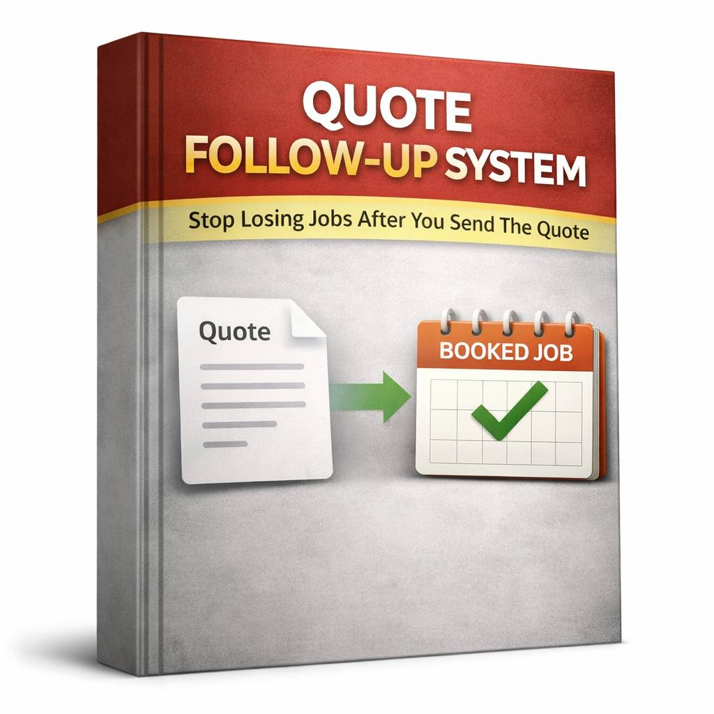

The quote goes quiet
No reply does not mean the job is dead. It usually means nobody chased it properly.
That is the problem. This gives you what to send, when to send it, how to track it, and when to stop. Read it fast, use it on the next quote, and stop losing jobs because follow-up slipped.

You send the quote. It goes quiet. You mean to chase it. Then work gets busy and it slips. Then the job is gone. That is the leak.
No reply does not mean the job is dead. It usually means nobody chased it properly.
Some quotes get chased. Some do not. Some get followed up when the job is already cold.
Then you chase late, drop your price, or just lose the job and tell yourself they were never serious.
Exactly what to do after you send the quote.
When to check in, when to send the next message, and when to stop.
What to send without sounding awkward, desperate, or pushy.
Track every quote so nothing slips and you know who needs chasing next.
When to leave it alone and stop wasting time on dead quotes.
It starts where the money leaks. Quotes get sent, follow-up gets missed, and work slips away after the price was already on the table.
No big setup. Use it with your email, phone, spreadsheet, notes app, or basic CRM.
It stops the usual follow-up mess. No freezing. No delaying. No awkward messages.
If you already send quotes, you do not need more leads first. You need to stop fumbling the ones already on the table.
No sales training. No heavy CRM build. Just fix the follow-up and recover more work.
You get the guide, the scripts, the tracker, what to do next, and when to stop following up.
No. Use it with email, phone, notes, spreadsheets, or a basic CRM.
No. The scripts are there so you do not sound annoying, awkward, or desperate.